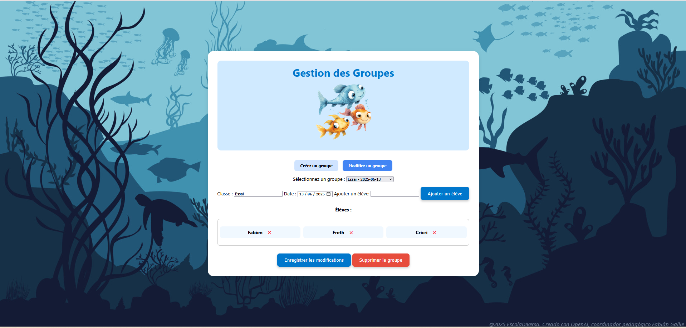
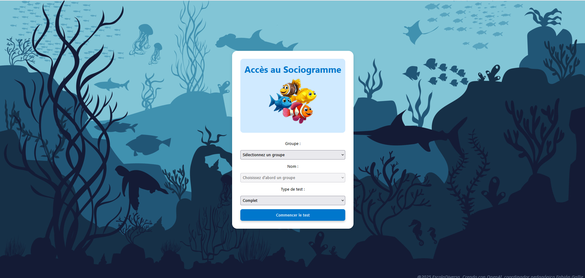

🔧 Gestion par les enseignants
Les enseignants ont un accès sécurisé pour gérer les groupes, assigner les tests et consulter les données.

Une application web conçue pour évaluer la structure socio-émotionnelle d'une classe et proposer des interventions éducatives adaptées.
Offrir une base de travail conviviale à l’échelle du groupe et de chaque élève pour améliorer les contextes d’apprentissage et la cohabitation en classe.
L’application est destinée aux enseignants, éducateurs et spécialistes de l’orientation scolaire.
Les élèves peuvent répondre à l’un des trois types de tests (basique, adapté ou complet) selon les indications de l’enseignant.
 L’enseignant accède à des rapports visuels : sociogrammes, indicateurs individuels et rapports de cohésion de groupe.
À partir des résultats, l'application génère des propositions d'intervention ciblées à travers des ressources éducatives (dynamiques, vidéos, lectures, etc.).
Les enseignants ont un accès sécurisé pour gérer les groupes, assigner les tests et consulter les données.
Chaque indicateur est expliqué et mis en lien avec le bien-être émotionnel et la structure sociale de l’élève dans le groupe.